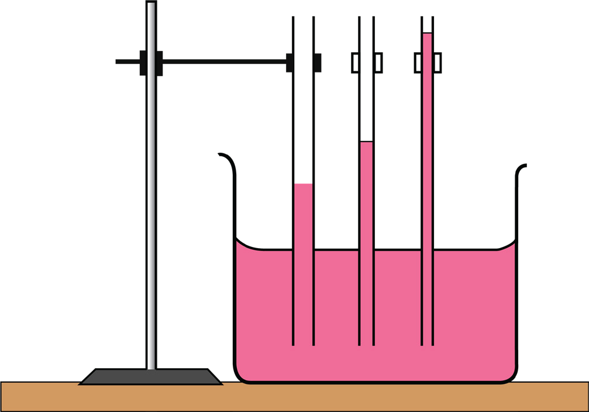

87
Student’s Book - Form Two

Biology for Secondary Schools
have a narrow lumen which makes it possible for water to rise in them by capillarity. Capillarity is made possible by cohesive and adhesive forces. The cohesive force is a force of attraction between molecules of the same type as opposed to the adhesive force which involves attraction between different molecules. Cohesive force makes the water molecules stick to each other
whereby adhesion occurs between water molecules and the surface of the xylem. Adhesive force causes water molecules to adhere to the xylem vessels. Capillarity occurs when the adhesion of water molecules to the walls of the vessel is stronger than the cohesive forces between the water molecules.
Activity 4.3: Demonstrate capillarity
Materials
Glass tubes of different diameters, beaker, coloured water, and retort stand
Safety precaution
Handle glass materials with care to prevent breakage.
Procedure
1.
Pour coloured water into the beaker.
2.
Put glass tubes of different diameters into the water but not touching the
bottom of the beaker. Clamp the tubes to hold them in place (Figure 4.15).

Capilary tube
Beaker
Coloured water
Retort stand
Figure 4.15: Experimental set-up to demonstrate capillarity
3.
Observe how water rises in the glass tubes.
4.
Compare the levels of water in the tubes. What have you observed?
5.
Write a short report of what you have observed.
08/04/2026 10:18:25